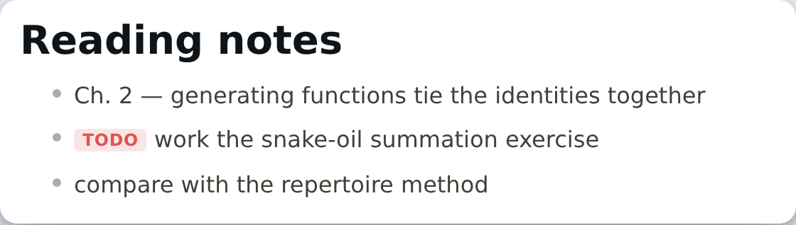

Features/Quick capture
Global quick-capture
- A passing thought shouldn't make you switch windows. Bind a desktop shortcut and a small always-on-top capture box pops up over any app — with the full Tine editor — and files what you type straight into your graph. Tine doesn't even need to be focused.
What it looks like

Set it up (Linux, one time)
Tine listens for a launch with the
--captureflag, so bind a global keyboard shortcut in your desktop environment to runtine --capture:- GNOME — Settings → Keyboard → View and Customize Shortcuts → Custom Shortcuts → +. Command:
tine --capture. Pick a key like Super+N. - KDE — System Settings → Shortcuts → Add → Command/URL. Command:
tine --capture. - Other desktops — add a custom keyboard shortcut that runs
tine --capture. Use the binary's full path if it isn't on yourPATH.
- Now press your shortcut from anywhere — the box appears, you type, and it's saved.
Where your capture goes
- If saving takes too long, your text stays in the capture box with a plain retry. Retry File capture to finish the same capture without adding it twice. Once that snapshot saves, its unchanged text is removed; additions stay for your next capture. If you rewrote earlier text, the message reminds you that the earlier capture is already saved. A changed title with no remaining body stays in the box with an Add text reminder; it is not silently cleared.
- If the graph window reloads or switches graphs after taking your capture, but saving is unconfirmed, Tine keeps your text and reports that it may be in the previous graph. Check that graph before capturing it again. A delayed capture that never reached a graph is refused without that warning; retry to capture in the current graph. Esc hides an unconfirmed capture without clearing its text or retry identity; reopen the capture box to see it again. Start a new capture is offered when the graph took the earlier attempt but saving is uncertain: it keeps the text, so remove anything already saved before filing it again. This protects retries during the running app session; the scratch box does not survive quitting the app.
- Leave the title empty → the text is appended to today's journal. This is the fast path: hotkey, type, done.
- Type a page title (the field at the top of the window) → it's filed to that page instead, created if it doesn't exist yet. Perfect for "add this to my Reading notes" without leaving what you're doing.
- It's the real editor in there:
[[page links,#tags,/slash commands, and nested bullets all work. - Paste an image (a screenshot) or a copied file into the box and it is saved into your graph's
assetsfolder, with a link in the captured bullet. Dragging files onto the capture box is not supported yet.
Create one yourself
- 1. Open your desktop environment's keyboard-shortcut settings.
- 2. Add a custom shortcut whose command is
tine --capture. - 3. Press the shortcut while another app is focused, then type a quick note.
- 4. Leave the title empty for today's journal, or type a page title to file it there.
- 5. What you should see: the capture box saves real Logseq bullets into your graph without switching windows.
Tune the Enter key
- By default Enter starts a new bullet and Ctrl+Shift+Enter files the capture (so you can jot several lines first). Prefer Enter-to-file? Open Settings and flip Quick-capture: Enter key.
- If you unbind Quick-capture: file to today's journal in Keyboard Shortcuts, the capture box shows a File capture button so filing remains available without a key.
- The box auto-grows as you type, and it keeps your draft if it loses focus. Esc clears an unsubmitted draft. After a refused filing, Esc keeps the text too; reopen the capture box to file it into the current graph. Filing clears only the text whose save was confirmed.
Where next
- Captures land in today's journal or on a page you name — Workflows/Capture and plan your day builds the rest of the daily flow on top. This capture window is a desktop feature. On Android and iOS, the share sheet, the Quick capture shortcut and iOS Shortcuts file to the same place: Reference/Platforms and mobile covers them and what each platform ships.